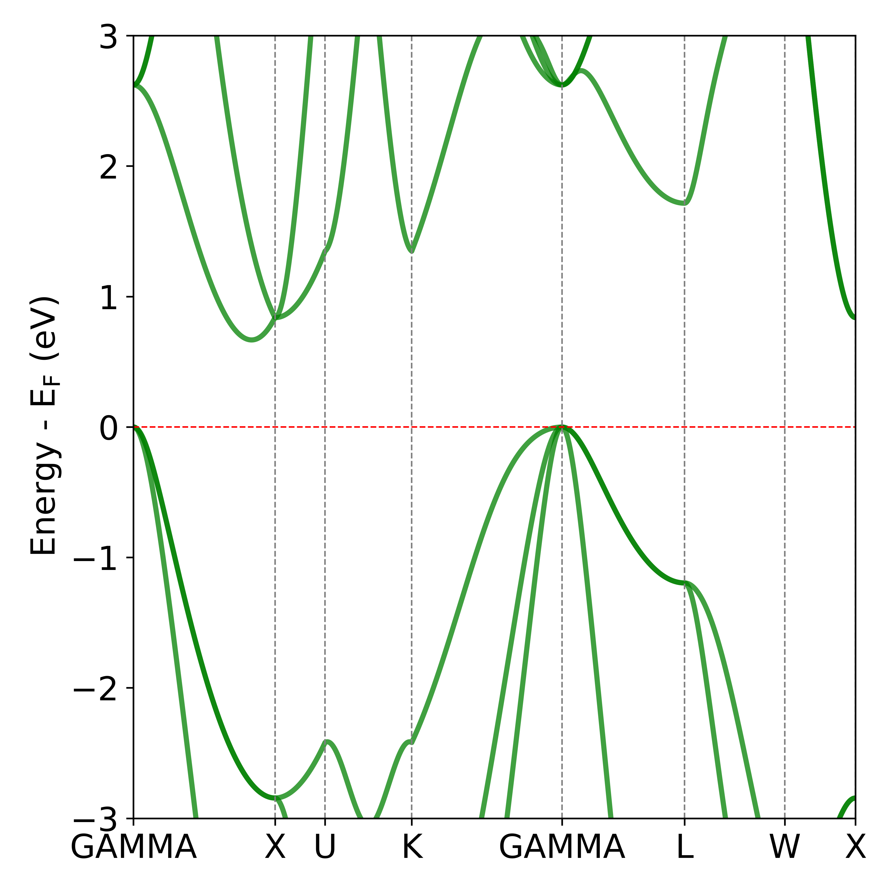
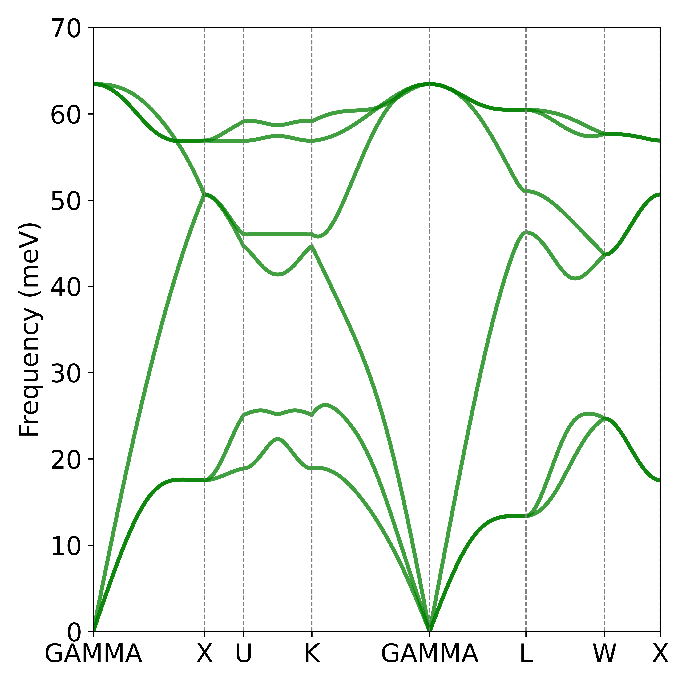

Dispersion of Quasiparticle
In this tutorial, we introduce the calculation of quasiparticle dispersion using QTrans.
Electronic dispersion of Si
This tutorial illustrates the calculation of the electron dispersion of the semiconductor Si.
The Si tutorial is located in tutorials/Si/openmx/ele-band/.
All necessary data files are available in tutorials/Si/openmx/data/.
Enter tutorials/Si/openmx/ele-band/, where you will find the input file input-ele.yaml and
the ref/ folder containing reference outputs:
cd tutorials/Si/openmx/ele-band/ && ls
input-ele.yaml ref/
In the input file input-ele.yaml, we specify cal_mode: 'band' to calculate the electronic band structure.
If the tags high_symmetry_points and high_symmetry_labels are not provided, QTrans will automatically
generate high-symmetry points and the corresponding k-path.
These tags can also be manually specified to customize the band path.
Here we comment out these two tags to use the automatically generated k-path.
The number of k-points along the path, nks_path, is set to 1000 to ensure better resolution.
The complete input-ele.yaml is:
basic:
cal_mode: 'band'
graph_data_path_uc: ../data/graph_data.npz
nao_max: 14
Ham_type: openmx
outdir: './'
dispersion:
nks_path: 1000
We are ready to launch the QTrans calculation with:
mpirun -np 8 QTrans_run --config ./input-ele.yaml > ele_band.out
After the calculation, QTrans will generate two output files: bands.dispersion and high_symmetry_path.dat.
bands.dispersion contains the band structure data with the following format:
# k_label: $GAMMA$ $X$ $U$ $K$ $GAMMA$ $L$ $W$ $X$
# k_node: 0.0000000000 0.0973729602 0.1317995005 0.1914280173 0.2947076380 0.3790350952 0.4478881757 0.4965746558
0.0000000000 -15.0936100706
0.0004968008 -15.0935005007
0.0009936016 -15.0931717829
...
...
The first line contains the high-symmetry k-point labels, and the second line gives the corresponding positions along the band path.
The remaining lines list the k-point distance (first column) and the energy values (second column).
For collinear magnetic materials, the file includes three columns: the k-point distance (first column),
the spin-up energy values (second column), and the spin-down energy values (third column).
All high-symmetry k-point labels and their fractional coordinates are listed in the file ele_band.out.
high_symmetry_path.dat stores the fractional coordinates of each k-point in the following format:
# nks = 1000
0.0000000000 0.0000000000 0.0000000000
0.0025510204 0.0000000000 0.0025510204
...
...
One should note that the energy values for each band shown here are obtained directly from solving the Hamiltonian, and are not shifted relative to the Fermi level. The Fermi level can be determined separately through a DOS calculation, see the DOS of Quasiparticle section. Use the VBM obtained from the same electronic data as the reference energy. The band structure is shifted accordingly and plotted in Figure 1.


Figure 1: Calculated electron dispersion of Si. The Fermi level is aligned with the valence band maximum (VBM).
Phonon dispersion of Si
This tutorial illustrates the calculation of the phonon dispersion of the semiconductor Si.
The Si tutorial is located in tutorials/Si/openmx/ph-band/.
All necessary data files are available in tutorials/Si/openmx/data/.
Enter tutorials/Si/openmx/ph-band/, where you will find the input file input-ph.yaml and
the ref/ folder containing reference outputs:
cd tutorials/Si/openmx/ph-band/ && ls
input-ph.yaml ref/
In the input file input-ph.yaml, we specify cal_mode: 'phonon' to calculate the phonon band structures.
The phonon block supplies the structure and force data for the dynamical matrix.
Here we also use the automatically generated high-symmetry path.
The number of k-points along the path, nks_path, is set to 1000 to ensure better resolution.
The complete input-ph.yaml is:
basic:
cal_mode: 'phonon'
graph_data_path_uc: ../data/graph_data.npz
nao_max: 14
Ham_type: openmx
outdir: './'
phonon:
supercell_matrix: [[4.0, 0.0, 0.0], [0, 4, 0], [0, 0, 4]]
unitcell_filename: ../data/Si-pri.vasp
force_infos_filename: ../data/FORCE_SETS
dispersion:
nks_path: 1000
Launch the QTrans calculation with:
mpirun -np 8 QTrans_run --config ./input-ph.yaml > ph_band.out
After the calculation, QTrans generates two output files: phbands.dispersion and high_symmetry_path.dat,
similar to the case of electronic band dispersion. However, the unit of energy in phbands.dispersion is meV.
We can also plot the phonon dispersion of Si, as shown in Figure 2.


Figure 2: Calculated phonon dispersion of Si.